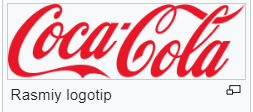

Coca-Cola yamasa Coke — The Coca-Cola Company kompaniyası tárepinen shiǵarılatuǵın alkogolsız gazlı ishimlik. „Coca-Cola“ 2005-2011-jıllar aralıǵinda Interbrend xalqara tekseriw agentligi reytingi boyınsha dúnyadaǵı eń qımbat brend dep tabılǵan. Búgingi kúnde bul ishimlik dúnyadaǵı 200 den artıq mámleketlerde satıladı.
Ishimlik 1889 -jıl 8-mayda (Jorjiya shtatı, AQSh) Atlantada oylap tabılǵan. Onıń avtorı farmatsevt John Stith Pemberton (ańızlarǵa qaraǵanda ishimliktiń retseptini bir fermer oylap tabıw etken hám Pembertonga $250 ge satadi, bul haqqında Pemberton óziniń intervyularining birinde aytqan emish). Ishimlikti atınıń Pembertonning esapshısı Frank Robinson kalligrafiya menen shıraylı etip „Coca-Cola“ sózin jazadı. Bul sóz házirgi kunge shekem ishimliktiń logotipi bolıp qollanilib kelip atır. „Coca-Cola“dıń quramında koka ósimlik (kokain) bar.
1.Coca-Cola planetada eń kóp tarqalǵan ónim bolıp tabıladı.
2. Coca Cola birinshi márte nervlardı tınıshlantiradigan ishimlik retinde bazarlarǵa shig'a baslaǵan.
3.Oca-Cola 1886 jılda rásmiy jumısqa túsirildi hám házirde 130 jasqa to'ldi.
4.Dúnyanıń tek eki mámleketi Coca-Colani satbaydi: Arqa Kareya hám Kuba.
5.Tanıqli Amerikalıq isbilermen Warren Buffetni boljawinsha Coca Cola tap suw sıyaqlı hesh qanday kesellik alıp kelmeydi kerisinshe insan organizimiga paydalı ishimlik bolıp tabıladı.
6.2015 jılda Coca Cola Apple hám Googledan keyin dúnyadaǵı úshinshi qımbat bahalı brendga aylandı.
7.Coca Cola birinshi jılı tek 25 shıyshe ishimlik satqan. Búgingi kunga kelip ol kúnine 1, 8 milliard shıyshe satpaqda.
Nurbol Davletbaev